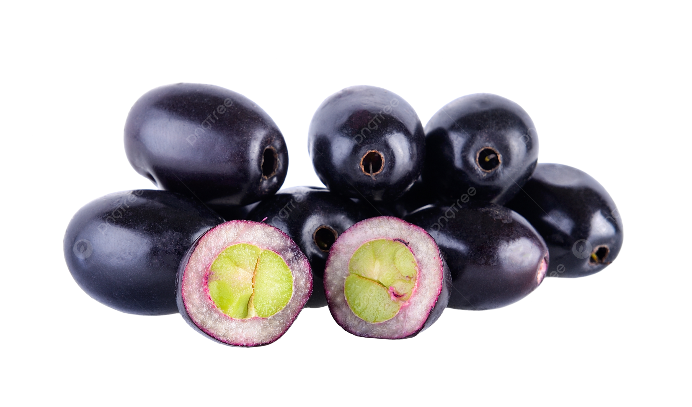

O Jambo ou Jambolão é uma espécie exótica, originária da Ásia e quando foi introduzida no Brasil, ganhou muito destaque principalmente nas regiões Norte e Nordeste devido aos seus frutos de cores avermelhadas. Nome popular: Jambolão, jambo, joão-bolão, baga-de-freira, brinco-de-viúva (Bahia) ou guapê (Paraná).
